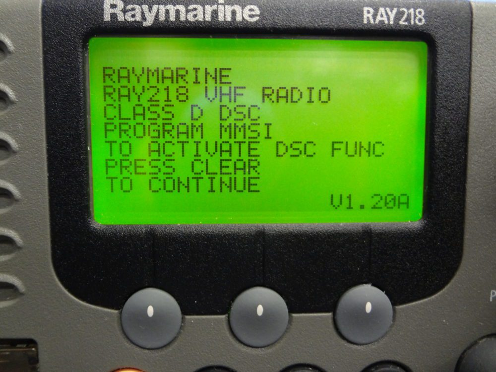

It is popular that a boat has both a primary and a secondary VHF radio however this is less critical on smaller craft that simply don't have the batteries for this as well as being unable to venture out quite as far. Since I have decided to keep with the Raymarine GPM400 Helm Setup I would like to choose a period accurate and stylistically cohesive VHF radio choice to keep with the vintage look. I also have a sneaky suspicion that the electronics from this era were of better quality.
| Ray49 |
|
| Ray240/240E |
|
| Ray 218/218E |
|
